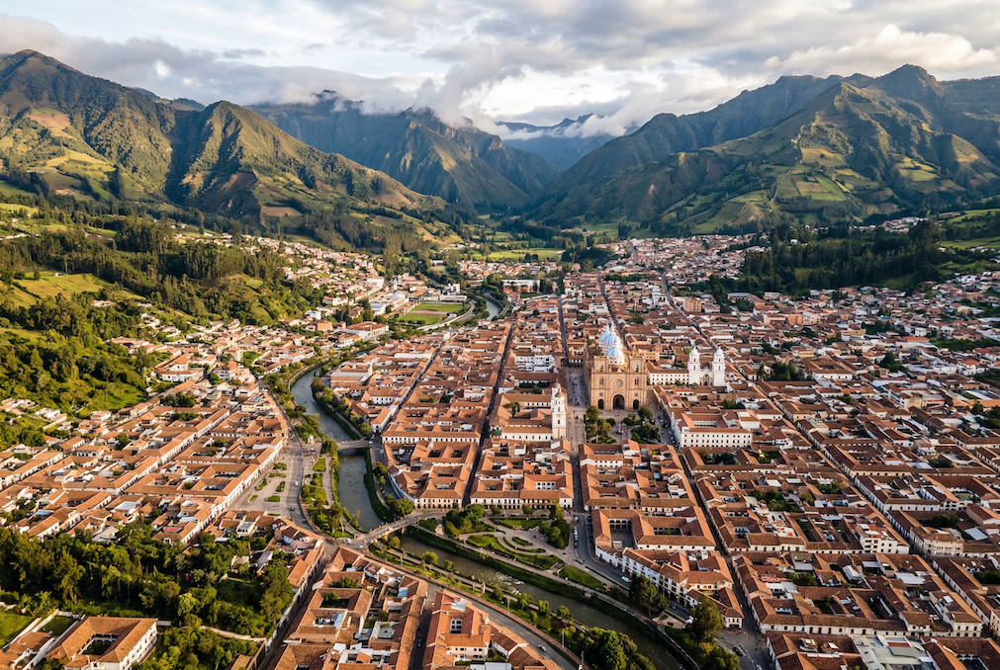

The Short Version
El Vergel / Av. Solano is the pick. $400–700/month for a 2BR. Walkable to parent meetups at Parque de la Madre, $5 yoga at OM Healing Center, CEDEI bilingual preschool, Supermaxi grocery, and the Tomebamba riverwalk — all without a car.
El Vergel / Av. Solano
The Winner — and it's not close
El Vergel is the only neighborhood that puts you within walking distance of both the parent community infrastructure (Parque de la Madre meetups, CEDEI) and the yoga/wellness corridor (OM Healing Center, Hands Om Ayurveda). Tree-lined, residential, and voted best neighborhood in Cuenca by GringoPost readers.
The single most important community touchpoint for your family is the Expat Parents Saturday meetup at Parque de la Madre — that's where Cris Mino told "Jon Dallas" to come, where Sarah Gallagher is seeking playdates for her 1.5 and 3-year-old, and where the under-5 parent scene actually concentrates. Parque de la Madre sits right in El Vergel. It's also where Tai Chi meets weekday mornings at 7:30am, Frisbee Fridays happen at noon, and Shakti Yoga runs free Saturday morning classes.


What's walkable from El Vergel
- Parque de la Madre — multiple wooden play structures across three areas, a running track, a free planetarium, and the gravitational center of the expat parent scene
- OM Healing Center (Huayna-Capac/Paucarbamba corridor) — $5 drop-in yoga, Ashtanga Mysore, sound healing, breathwork, psychotherapy. Jess's most likely daily studio
- Hands Om Ayurveda (Francisco Moscoso) — Abhyanga, Shirodhara, Reiki, prenatal massage
- CEDEI bilingual preschool — the top-recommended English-language early childhood option, right in the neighborhood
- Supermaxi grocery — walkable daily shopping
- Tomebamba riverwalk — runs along the northern edge. Daily nature walk for Jess and Bodhi without getting in a car
- Universidad de Cuenca — adjacent, which means student energy, the public library ("Juan Bautista Vázquez," open to the public), and Café Geográfico philosophy discussions at the Facultad de Filosofía
- IMPAQTO coworking (Av. 12 de Abril) — river-view coworking from $65/month, a short walk from the apartment
"El Vergel is the only neighborhood that puts you within walking distance of both the parent community infrastructure and the yoga/wellness corridor. The university brings younger energy to an otherwise retirement-heavy expat scene." — From the neighborhood analysis
The Tradeoff
El Centro's cultural venues (IdiomArte, La Guarida, Azuay Community Theatre) are a 15–20 minute walk north across the river, or a $2–3 taxi. Not next door — but not a barrier either. You'll go when there's something worth going to, which is almost every week.
Southern El Centro — San Sebastián / Calle Larga
Rent: $400–700/month (2BR, older buildings). The cultural alternative. This puts you right on top of the venue infrastructure that dominates the events calendar — IdiomArte, La Guarida, Azuay Community Theatre, Museo Pumapungo, and Calle Larga all within easy walking distance.


What's walkable from southern El Centro
- IdiomArte (Mariscal Lamar y Estevez de Toral) — 80+ events/year: Umbral art exhibition, Silhouettes life drawing, biodanza, Spanish workshops, theatre productions, community drum circle, Espíritu de Sevilla performances, Survival Spanish 2.0
- La Guarida (Mariscal Lamar 22.23) — Canelazo Stories (Moth-style storytelling, Thursday evenings 7–10pm), jazz brunch (last Saturday of month), live music Thursdays, movie nights. The closest existing format to Real Talk events
- Azuay Community Theatre (Antonio Vega Muñoz 14-46) — English-language plays, auditions open to expats
- Museo Pumapungo — free, outdoor Inca ruins, llamas, hummingbird garden, bird rescue center with scarlet macaws. The best toddler museum in the city
- Teatro Pumapungo — home of the Cuenca Symphony Orchestra (free Friday evening concerts)
- Tomebamba riverwalk — immediately accessible for daily nature walks
- Calle Larga — nightlife, restaurants, intercambio nights, Windhorse Café (Iyengar yoga Thursdays & Saturdays)
"If IdiomArte and La Guarida become your primary social anchors — which they might, given they host Real Talk–adjacent events, live music, art, and the deepest creative and intellectual programming in the city — living in walking distance means you'll actually go." — From the neighborhood analysis
The Tradeoff
El Centro is noisier. Buildings have poor sound insulation. Streets are busier with traffic and exhaust fumes. Parque de la Madre and the parent meetup scene are a 10–15 minute walk south across the river — doable, but you'd be commuting to the parent hub rather than living in it. Apartments tend to be older with less natural light.
Puertas del Sol Conditional
Rent: $450–600/month (2BR). A dark horse — but only if SHALA Pilates Studio becomes Jess's primary yoga home. Aubree Jeanne's yoga classes (Tuesdays & Thursdays 6:30pm, Saturdays 8am) are here. The neighborhood sits on the south side of the Tomebamba River, west of Av. de las Américas — quiet, residential, along the river with greenway access for daily walks. Plaza Soleil shopping center and Feria Libre market are nearby.
The Tradeoff
Previous residents reported noise issues near Plaza Soleil and Feria Libre. It's farther from El Centro's cultural scene, farther from El Vergel's parent community, and doesn't have the walkable density of amenities that either of those offers. Works if Jess builds her routine specifically around SHALA — but isolates you from the two hubs that matter most.
Where NOT to Live

Gringolandia / Ordóñez Lasso
Common Grounds (the expat sports bar with weekly open mic, trivia Tuesdays, Gran Feria artisan markets) is here, and so is the Jazz Society Café (Ecuador's only dedicated jazz club, Wed/Fri/Sat 6–10pm). But the area is high-rise, car-dependent, and the community skews heavily retiree. The digital nomad café meetups rotate locations anyway, so you don't gain much by living near Common Grounds specifically. The Tranvía tram connects it to El Centro, but the neighborhood lacks the walkable village feel your family needs.
Yanuncay / La Isla / Tres Puentes
The greenest option. The Jardín Botánico (21 hectares, 8,000 plant species, free), Parque El Paraíso (forest trails, playgrounds, lake, children's traffic school), and the Yanuncay riverwalk are all here. Beautiful for daily outdoor time with Bodhi — and worth weekend trips.
But it's the farthest from both El Centro's cultural scene and El Vergel's parent community — roughly a 30-minute walk from most of this area to either hub. For a car-free family prioritizing walkability to community, it's too isolated as a home base.
The Venue-to-Neighborhood Map
Every recurring venue from the research mapped to its neighborhood — so you can see exactly how the city clusters.
| Venue | Neighborhood | Key Events |
|---|---|---|
| Parque de la Madre | El Vergel | Expat Parents Saturday meetup, Shakti free yoga (Sat AM), Tai Chi (Mon–Fri 7:30am), Frisbee Fridays, Running Motivation Ec |
| OM Healing Center | Huayna-Capac (adj. El Vergel) | Daily yoga ($5), Ashtanga Mysore, sound healing, breathwork, psychotherapy |
| Hands Om Ayurveda | Francisco Moscoso (adj. El Vergel) | Abhyanga, Shirodhara, Reiki, prenatal massage |
| CEDEI School | Near El Vergel | Bilingual preschool, English + Ecuadorian co-teachers |
| Universidad de Cuenca | Adjacent to El Vergel | Public library, Café Geográfico, cultural events, language exchange |
| IMPAQTO Cuenca | Av. 12 de Abril (near El Vergel) | Coworking ($65+/mo), networking events, river view |
| IdiomArte | El Centro (Mariscal Lamar y Estevez de Toral) | 80+ events/year: art exhibitions, biodanza, drum circle, theatre, Spanish workshops, Writers Read! |
| La Guarida | Western El Centro (Mariscal Lamar 22.23) | Canelazo Stories (Thu 7–10pm), jazz brunch (last Sat), live music, movie nights |
| Azuay Community Theatre | NW of El Centro (Antonio Vega Muñoz) | English-language plays (~6/season), auditions |
| Teatro Pumapungo | Eastern El Centro | Cuenca Symphony Orchestra (Fri 8pm, often free) |
| Museo Pumapungo | Eastern El Centro | Free museum, Inca ruins, llamas, bird rescue — best toddler outing |
| Vamos Spanish School | Calle Larga (El Centro) | Language exchange Sat 11am–12:30pm, $2 |
| Café Ñucallacta | El Centro area | International Night intercambio Wed 6:30–9pm |
| Scoops | El Centro area | Spanish class Thu 5pm + free intercambio 6pm |
| Bistro Yaku | El Centro (Yakumama Hostel) | Live bands (Funky Tu Madre, charangos), intercambio Fri 6:30pm |
| Selina Cuenca | Historic Center | Coworking, yoga deck, younger nomad crowd |
| SHALA Pilates Studio | Puertas del Sol | Aubree Jeanne yoga: Tues/Thu 6:30pm, Sat 8am |
| Common Grounds | Gringolandia (Eduardo Crespo Malo y Gran Colombia) | Open mic (Thu 7pm), trivia Tues, salsa Wed, live music Sat, Gran Feria (biweekly Sat) |
| Jazz Society Café | West side (Los Claveles y Ordóñez Lasso) | Jazz dinner concerts Wed/Fri/Sat 6–10pm, $10 cover |
| Parque El Paraíso | Yanuncay / La Isla | Largest park, forest trails, playgrounds, Shakti free yoga (Sun AM) |
| Jardín Botánico | Yanuncay / La Isla | 21 hectares, 8,000 species, free, flat stroller paths |
The Decision Logic

"Start in El Vergel because the parent community is the hardest thing to build from scratch — you want to be where the other families already are. The Parque de la Madre meetups are the single most important entry point." — From the neighborhood analysis
Here's how the logic stacks up:
- The parent community is the hardest thing to build from scratch. You want to be where the other families already are. The Parque de la Madre Saturday meetups are the single most important entry point for Jess and Bodhi.
- Jess's daily yoga at OM Healing Center is walkable from El Vergel — $5 drop-in, no schedule required.
- CEDEI preschool for Bodhi is walkable — no car, no commute, no logistics overhead.
- The Tomebamba riverwalk gives Jess and Bodhi their daily nature fix from the front door.
- The university injects younger energy and intellectual programming into an otherwise retirement-heavy expat scene.
- El Centro's cultural scene is a short walk or $2–3 taxi — close enough for evening events, far enough to escape the noise.
If after a few months IdiomArte and La Guarida become your primary social anchors — which they might — consider moving north into the Calle Larga / San Sebastián zone. But El Vergel is the safer starting point, and the right first home.
"El Vergel / Av. Solano is the clear winner — and it's not close." — Cuenca Neighborhood Analysis, March 2026